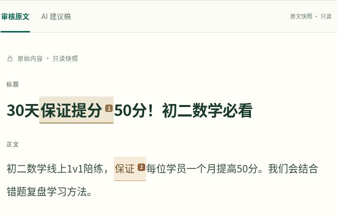
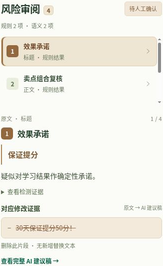
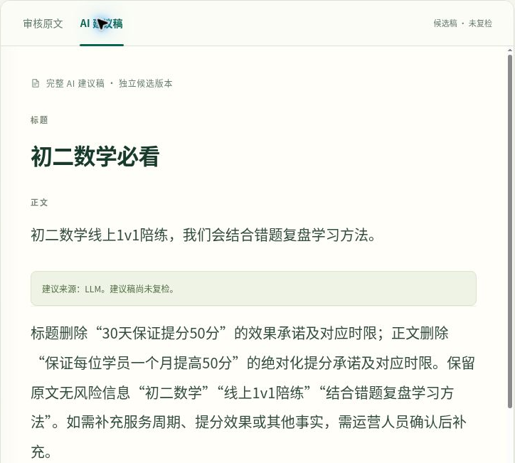
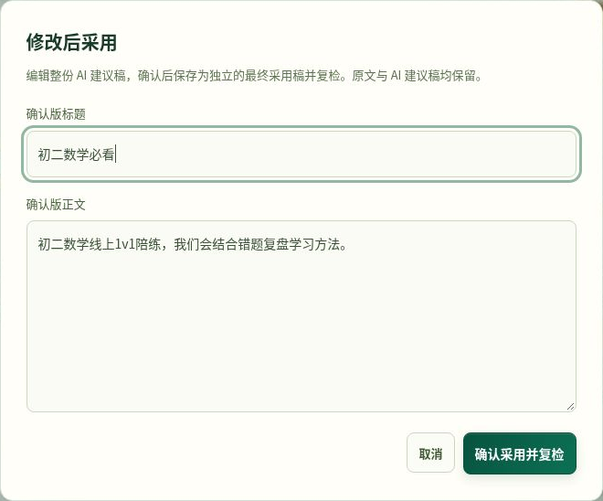
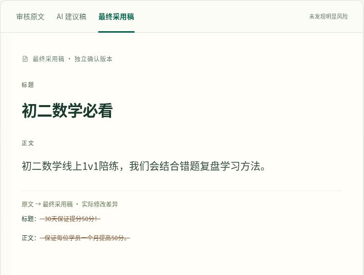
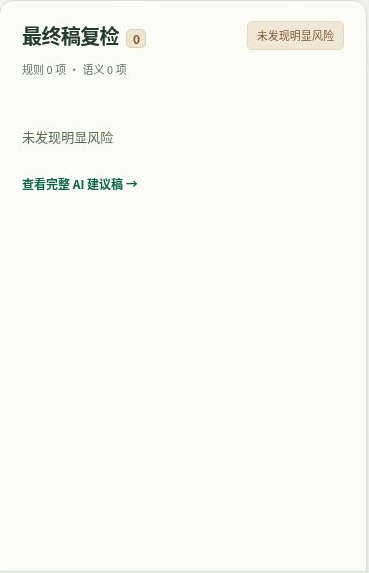

让 AI 发现风险，让人作出决定。
01 / 风险识别
先看原文中的风险位置，再看系统如何解释。



这个设计解决了什么？
01 原文单独保留
风险标记不等于直接改写原稿
02 AI 建议独立展示
建议需要核对，不自动成为最终内容
核心机制AI 负责建议，人保留最终决定权。
这条 AI 建议，怎么处理？
建议稿仍是候选版本，原始文案保持不变。

查看已记录的产品状态，不执行线上决策

